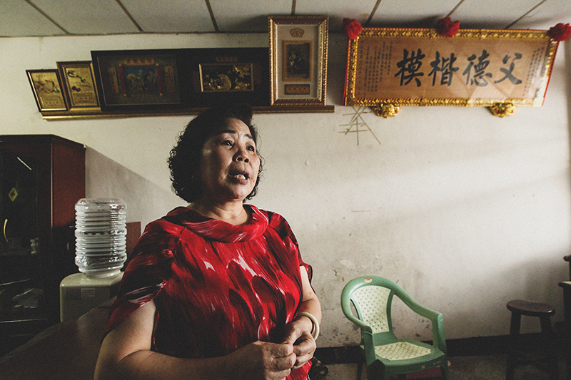

桃園「樹林新村」沒有翠綠茂盛的樹林
卻被上百間工廠包圍
刺激嗆鼻的氣味日夜侵襲，僅剩百人的村落
近年來17名村民罹癌過世，癌症死亡比例高達77%
被當地人稱為「癌症村」
 LOADING... 0%
LOADING... 0%
卻被上百間工廠包圍
刺激嗆鼻的氣味日夜侵襲，僅剩百人的村落
近年來17名村民罹癌過世，癌症死亡比例高達77%
被當地人稱為「癌症村」

「以前大家坐著大卡車遷到這裡，感覺很奇怪，離鄉背井那樣。」59年前，還是小女孩的廖寶貴，懵懵懂懂地，跟隨父親廖安福搭上政府安排的卡車，從山上的石門水庫淹沒區，遷居濱海貧瘠的觀音鄉，就此別離原生的家園；她回憶當時，「長輩會難過、不習慣，覺得被騙了」。只是，廖家人沒想到，生命的苦難還沒結束。
廖寶貴回憶，以前的人比較老實，「很認命」地遷居，不像現在如果碰到迫遷，居民都會去抗議。而搬來這裡後，海邊又熱又是沙地，什麼作物都不好種植，「大家都很辛苦」。1990年，觀音工業區設立，周遭一座座工廠拔地而起，不分晝夜，排出味道濃重的黑煙，雖然帶來許多工作機會，但居住環境變得更差。
「這裡是村的市中心」，廖寶貴說，父親生前經營村裡的一間柑仔店，這間店起初是祖父開的，現在已經傳到第三代經營。每當我們造訪樹林新村，便會看到左鄰右舍、附近勞工，來此購買日用品或食物。「以前我爸爸在，都好幾桌。我爸爸規定，一定要放圓桌，大家聊天，喝喝小酒，老人聚集的地方。」
廖安福退休之後，廖寶貴常帶他一起出國旅遊，可是好景不常，他2012年罹患喉癌、食道癌過世。住在隔壁的弟弟廖安喜，也在2017年罹患攝護腺癌過世。短短6年間，廖家兩位長者先後辭世。
罹癌是否跟周遭環境有關？廖寶貴說：「倒沒有這麼想，大家（村民）都很逆來順受，不會想到說是什麼影響，只覺得老了就生病。」不過，廖安福的媳婦、現在接手雜貨店生意的范寶珠，則是對公公的過世、樹林新村的環境變遷，感觸良多。
「出國前，老人家還好好的在顧店，走來走去啊！沒想到第二天就接到噩耗（電話）。」談到公公7年前因病驟逝，范寶珠在雜貨店櫃台比手畫腳，彷彿想描繪出亡者生前在店內走動的模樣。
她從櫃檯抽屜，拿出十幾年前的老照片，手指著相片中的公公，難過地說，「這是我們一起去桂林玩的，他去大陸好幾次，他身體本來很硬朗啊！本來喉癌治好了，後來（癌細胞）轉到食道癌，半年後就走了。」
范寶珠說，當時把公公從醫院接回家照顧，身體已恢復大半，「癌症的36個療程，包括化療都完成了，跟人家聊天講話都很正常，他的意識很清楚，很堅強。」未料，她跟家人至新加坡旅遊時，老人家卻在台灣驟逝，急忙回國處理後事。

她原先住在中壢，嫁來「樹林新村」逾30年。她說，以前這邊沒有工廠，都是田地，後來工廠設立，常在半夜排出帶有酸味的廢氣。如果睡覺開窗戶，隔天起床洗臉時，就發現一層黑黑的污垢。
「化學物質的水流出來，有去抗議。以前講到現在，沒有用。以前還有組自救會，後來解散掉，有團結，還是一樣沒用！有送（關於汙染的）公文出去，請工廠不要排汙氣、汙水，還是不了了之！」范寶珠氣憤又無奈地說。
談到近年居民的健康問題，她說：「以前不會聽到有人罹患癌症，現在卻聽到，這個癌症走掉，那個又癌症走掉，聽得我們心驚膽跳。還是會擔心自己的身體，但擔心又能怎樣呢？」
「以前要去進香，最少要三台遊覽車，現在剩一台，人都跑光了。」樹林新村的復興宮，是當初隨著石門水庫移民遷徙的廟宇，更是當地信仰及社交活動中心。然而，廟祝陳耀雄說，近年當地人口外流，加上長者陸續病逝，參加活動的人越來越少，也反映了樹林新村的興衰史。
「廟隨人走」，這句話是復興宮最好的寫照。這座廟的前身，是桃園大溪阿姆坪的「南雅宮」，供奉主神為開漳聖王，創建於清光緒16年（1890年），後改名為復興宮。民國44年（1955年），石門水庫開始籌備興建，將淹沒阿姆坪等地區及復興宮，地方人士便決議將其「隨居民遷至觀音鄉樹林村」。民國50年（1961年），信眾在樹林村建廟，並將開漳聖王神尊，從山上接到海邊。
樹林里19鄰鄰長廖金田，是當初從大溪移居來此的移民。他回憶，小時候住在山裡的時候，過著「種田，割草餵牛」的生活。當初石門水庫建成，不得不遷村的時候，自己正在金門當兵，後來才聽家人說，那時有一個大颱風，使得石門水庫的水暴漲，淹沒大片地區，房子都垮掉，就趕緊搬出來。
「退伍後一個星期，回去老家看看，結果全部水淹掉了。那一下，全部東西都沒有了。山的形狀，我記得（才找到以前家的位置），看到就流淚了。」廖金田回憶返回老家的那天，景象歷歷在目。
相反地，身為樹林村當地人的陳耀雄記得很清楚，復興宮隨著移民遷來時，他正準備入伍；等他3年後退伍，廟已蓋好了，後來又翻修兩次，成為今日模樣。回憶樹林新村人丁興旺時，他說：「以前不論慶祝什麼，人都很多，都會來這邊慶祝。」
陳耀雄說，現在每天來廟裡的人越來越少，尤其是年輕人不會參與，只剩下幾個老人在廟裡活動。「現在他們新住民來，不會參加這個。新住民都是搬來這邊，租房子，跟廟有一點隔閡。」

前年底，我們曾跟隨樹林里民，參加復興宮的「北巡」活動，前往貢寮等地的宮廟進香，過程中大夥到處拜拜、吃飯，算是難得的出遊。我們在過程中了解到，許多參加進香的民眾，其實原本都是樹林新村的居民，但後來卻陸續搬離至附近的草漯等地，唯有遇到這種信仰活動，才會回來參加。
另一居民李振榮也說，樹林新村人口銳減，復興官不如往日熱鬧。他回憶，以前人較多的時候，每天清晨廟口會聚集10幾名老人，燒香拜佛，泡茶聊天。「老人家一個一個走掉，現在泡茶的人，越來越少。陸陸續續，幾乎每年都一兩個，都是那一輩的。」李振榮嘆氣說，從復興宮的變化可以看出，樹林新村正在慢慢凋零。
奔跑、投籃，男孩們打著鬥牛，享受運動揮汗的快感，他們身後不遠處的天空，卻聳立一座座廠房與煙囪；這裡是樹林國小，一座被空汙包圍的學校。住在當地的4年級呂同學說，有時上學會聞到各種臭味，「尤其是在午休時，就戴著口罩睡覺。」近年，地方人士積極推動遷校，盼改善就學環境，桃園市政府也表示正在研擬，但卻遲遲未能真正實現。
位於桃園觀音樹林新村內的樹林國小，是民國49年為因應石門水庫移民需求而成立，已有59年歷史。校長呂天得說，學生人數高峰時逾200名，甚至有一家三代都就讀於此，但近年當地人口外移，加上少子化的趨勢，學生數已銳減至101人。

走訪國小，我們發現其西、北兩面緊鄰觀音工業區，圍牆外廠房林立，有的相距甚至不到100公尺。而校園東面的一塊空地，大型吊車進進出出，如火如荼興建嶄新廠房。「聽說是一間鮭魚回流的氣體廠」，該校總務主任林居城指著不遠處的怪手說。
林居城說，「我一個月通報（環保局）一次到兩次，有很嚴重的異味就會通報。這邊常出現的味道是酸，還有一些化學味道，類似農藥。」住在樹林新村的6年級莊同學也說，走在外面街道或上課時，不時會聞到異味，「是酸臭味，但是大部分時間都是好的。」
為了替學生的健康把關，該校3年前裝設桃園環保局的空氣監測器，測量細懸浮微粒（PM 2.5）、一氧化碳、二氧化硫，並將數據回傳，計算出「空氣品質指標」（AQI）。我們前後兩度造訪國小，AQI分別達到「橘燈」與「紅燈」，已達到對人體不健康的程度。
林居城解釋，環保局獲報後，會派員來調查風向與工廠，「查的到，但是空氣品質有罰的標準，他們說大概都還在標準值以下。」他強調，除了裝設空氣監測器，學校盡量在教室多裝冷氣，若空氣不好就關起門窗上課，「先做第一道的防護。」另外，學校也在辦公室裝了空氣濾淨器，希望可以守護教職員的健康。
除了空汙，樹林國小的教師，更面對孩童程度參差不齊的問題。觀音工業區設立後，湧入藍領工人和外配，他們的子女便來此就學，包括印、越與菲裔，約占總數的4分之1。該校音樂老師蔡佩育說，外配孩童的語言溝通可能出問題，「放暑假，他們回到自己的國家，再回來，跟他們溝通就有代溝，因為他們可能忘記了，原本我們講的是什麼。」
為了讓偏鄉的弱勢學童勇敢走出去，蔡佩育3年前創立30人的學校合唱團，練習菲律賓等外語歌曲，去年更勇奪全國鄉土歌謠比賽「東南亞語組」優等。「這裡的小孩很喜歡哼哼唱唱，有的唱自己的母語，我就想組成合唱團，讓孩子覺得，可以唱歌給媽媽聽。」她說。
偏鄉教育加上環境問題，促使樹林里長吳進昌推動「遷校」。他說，這裡不只有一個風向會汙染，是全面性的汙染。「如果政府正視這邊是弱勢、高污染的生活環境，應該要主導遷校。」桃園市長鄭文燦，去年接受質詢時則說，規劃在草漯重劃區尋覓適當地點設立新校，原校則變更為工業用地，提供更好學習環境。
《蘋果新聞網》沿著被工業廢水染成死寂的富林溪而下，空拍俯視這處被觀音工業區包圍的樹林新村。歷經1年半調查，推出重磅專題「癌症村」，透過3D建模技術，將村落重現在數位網頁上，光蓋一座宮廟就花了1天半的時間。《蘋果》工程團隊耗時一個月後製，打造一座從無到有的虛擬城市，帶讀者親臨這座「被上帝遺忘的角落」。
「建模要先建骨骼，再慢慢把皮膚貼上去！」辦公桌上擺著兩台螢幕，一邊是復興宮的空拍照片，另一邊是宮廟的立體圖，《蘋果》美術中心圖像主任游為能親自操刀3D建模工程，他一磚一瓦地將白色方塊，拉皮出宮廟的外觀，最後裝上屋簷雕飾，「之前做高雄氣爆的現場建模只要4小時，這次光蓋廟就花了1天半。」
「3D建模的時間是平面建模的3倍。」游為能分析，過去製作報紙的建模僅處理「肉眼看得到」的場景，只要2張圖拼貼即可，參考同事回傳的新聞照片，或者查詢Google網路地圖，「過去花4小時就可以完成一個火災新聞現場，但這次的3D建模工程，卻要花12小時才能蓋好一棟民宅。」他說。
游為能指出，3D建模技術最難的就是重建現場，為讓讀者可以360度看清楚民宅的每個角度，蓋一棟房子需要5張圖拼貼。光靠Google地圖的資料不夠，房子之間的分界也不清楚，還必須靠記者在現場空拍民宅外觀，參考細節蓋出一模一樣的住宅，「有些房子被樹木擋住，根本沒辦法比對。」最後看到成品卻讓他頗具成就感，嘗試過去沒有的報導形式，帶讀者深入現場。
「親手蓋了一座從無到的有虛擬城市。」《蘋果》數位工程師耿詩婷透露製作網頁的甘苦談。她利用專門處理3D互動的Three.js的Javascript函式庫，搭配大量的數學計算，建立場景並導入3D模型，接著加入攝影機及燈光。
同時客製化網頁的互動功能：隨意操控視角和縮放距離（zoom in/zoom out），讓讀者可以透過滾輪瀏覽整座村落，如臨現場般，看見每村民的故事。在村落中10個故事的建築外觀標上錨點，點擊隨即特寫進該棟建築。最後利用攝影機鏡頭視角及三角函數，劃定讀者滑動螢幕的邊界，將其留在村落及周邊工廠的範圍內。並借鏡外國3D網站操作、呈現方式，優化手機版的閱讀體驗。
2017年11月初《蘋果》首度造訪樹林新村，灰濛濛的烏雲挾帶著雨水，從巷弄望去，清晰可見一根高聳的煙囪貫穿天際，彷彿地標一般。只要煙囪排放黑煙，村民紛紛戴起口罩、關起門窗。全村只有兩條街，夏季，南風襲來，一股刺鼻酸臭味壟罩著樹林新村，村民怨聲載道。
採訪期間《蘋果》也曾被「酸空氣」侵襲，採訪一天下來，回到公司已頭暈目眩。為了調查當地空汙，我們放置檢測機，進行一個月的空氣品質監測，「有檢測出甚麼結果嗎？」每個村民看見我們就關心的問，他們很想知道他們居住的環境怎麼了，但沒有人能告訴他們。
《蘋果》長期蹲點、逐戶拜訪當地居民，蒐集17名罹癌過世的家屬訪談，這一段段「對環境的控訴」，目前科學也許沒辦法抓出汙染的兇手，但這些人早已用身體去驗證環境汙染造成的傷害。他們或許說不出大道理，但一首點給因罹癌逝世妻子的卡拉OK情歌、遺孀啜泣聲、兒女向亡父捻香的祈禱聲，聽來就像是對環境汙染發出的悲鳴。
新調查中心
何柏均、林奐成、陳偉周、陳鼎仁、吳宜靜、劉怡馨
數位視覺中心
王士銓、薛合淇、胡祖維、耿詩婷、王文婷、游為能